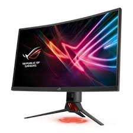

For All Your PC Gaming Information
Welcome to
Picking a screen may feel more like craftsmanship than science, however the innovation behind the screen isn't difficult to comprehend. Finding out about those advances is vital to exploring the minefield of showcasing popular expressions isolating you from your next screen. For instance, numbers like differentiation proportion and dim to-dim reaction time are significant, however they don't recount to the entire story—different particulars like information deferral and shading bit-profundity are similarly as significant. And keeping in mind that it's kind of conceivable to discover a screen that can do it by any means, the cost can be extremely high. There are shows fit to gaming, structure work, and ultra-high goals detail, yet blending needs regularly brings about trade off. Quick, vivid, or high-DPI—pick any two, yet the third will cost you.
While you may be slanted to pursue the most elevated pixel check you can discover or bear, this isn't generally the best procedure for finding an ideal showcase. Higher goals offer more prominent detail yet require quicker designs cards for gaming purposes, and Windows' DPI scaling despite everything isn't great. How you utilize your PC just as your equipment will help decide the perfect goals and size for your next presentation. LCD shows have a local goals, and running match-ups (or the work area) beneath that goals corrupts picture quality because of the scaling procedure of developing the picture. Utilizing lower goals modes isn't generally a substitute for picking the correct number of pixels in any case. Nowadays, any new work area or PC show with a local goals underneath 1080p (1920x1080) is best kept away from. 1080p has gotten the true standard for most PCs, with games and motion pictures focusing on the goals. It's a decent trade off that conveys sensibly sharp picture quality at 24 inches and underneath, and you can in any case get amazing gaming execution even with humble equipment. In case you're playing a game on a more seasoned designs card (or incorporated illustrations), you can run at a lower goals like 720p (1280x720) when there's no other option, yet long haul you'll need a superior GPU that can drive 1080p. While 1080p showcases are the workhorses of the PC world, there are impediments. Screen measures more than 24 inches aren't incredible for 1080p, as the brought down pixel thickness on those bigger screens makes for a not really sharp picture. Non-gaming undertakings including office work and substance creation can likewise profit incredibly from a higher goals, which is our subsequent stage. Having a higher goals show can give a considerable increment in efficiency, and nothing beats 2560x1440. A 27-inch 1440p presentation conveys higher pixel thickness than a 24-inch 1080p showcase, making everything look more keen. All the more critically, it's 77 percent more pixels. That implies increasingly open windows without covering or conceal content. Furthermore, with progressively incredible illustrations cards, 1440p is currently feasible on midrange and higher level GPUs. 1440p has become our suggestion as the best by and large choice. It's extraordinary for office work, proficient work, and gaming. You can even now get higher revive rate 144Hz boards (see underneath), in addition to G-Sync or FreeSync, and you can run at 100 percent scaling in Windows. For gaming purposes, be that as it may, you'll need at any rate a GTX 1070/RTX 2060 or RX Vega 56 (or equal) illustrations card. Past 1440p, gaming gets uncertain and costly multi-GPU arrangements are regularly required for worthy execution (however numerous games don't bolster multi-GPU, so that is not constantly a reasonable arrangement). 4k shows are the place most PCs top out, and keeping in mind that 5k and even 8k shows exist, those goals speak to the cutting edge of screen plan and by and large aren't helpful for gaming reason. Understanding any genuine presentation yearnings at 3840x2160 requires a ultrafast designs card (eg, GTX 1080 Ti/RTX 2080 or even 2080 Ti), and perhaps two such GPUs. That could mean a cool £1400-£2400 only for the illustrations subsystem. But if you want bragging rights and the ultimate rig, there's nothing equal to a 4K display. 4k HDTVs have also become quite affordable, some of which can make a good alternative to a computer monitor.
